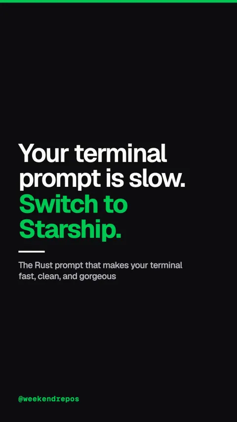

starship
The Rust prompt that makes your terminal fast, clean, and gorgeous

Your terminal prompt is slow. Switch to Starship.
One blazing fast binary written in pure Rust.
First, Starship replaces bloated shell scripts with a single compiled Rust binary that renders in two milliseconds.
2ms render time · zero shell script latency
Context-aware modules show only what matters now.
Second, it is completely context-aware: it displays Git status, Node or Python versions, and cloud targets only when detected.
Git status · package versions · cloud contexts
Configure everything with one simple TOML file.
Third, customize colors, glyphs, and prompt ordering in a single starship dot TOML configuration file.
~/.config/starship.toml · clean declarative config
100x faster than legacy shell theme frameworks.
It runs across Bash, Zsh, Fish, and PowerShell, eliminating lag completely.
Sub-3ms prompt render vs 250ms shell script frameworks
Open source on GitHub with 59,000 stars.
Starship is open source under the ISC license with over fifty-nine thousand stars on GitHub.
github.com/starship/starship · ISC License